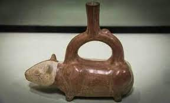
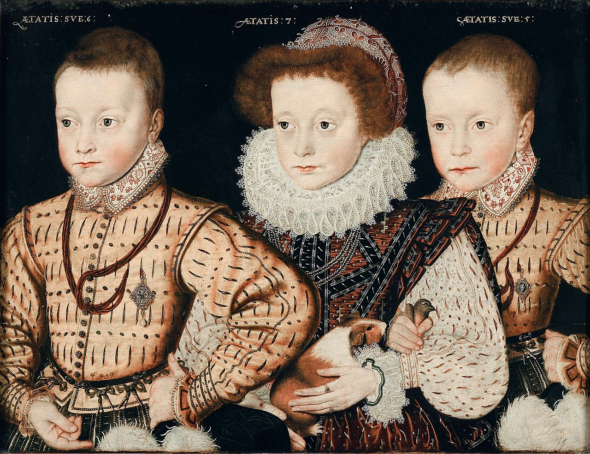

Descendente direto do C. tschudii, o porquinho-da-índia foi domesticado pela primeira vez por volta dos 5000 a.C para a alimentação de tribos nativas dos Andes. O povo pré-colombiano Moche adoravam animais e frequentemente retratavam o porquinho-da-índia (PDI) em sua arte.[2]
Em um período compreendido entre 1200 d.C até à Colonização espanhola da América iniciada em 1532, esses povos indígenas usaram a seleção artificial, a qual desenvolveu o grande número de variedades PDI. Atualmente, nos altiplanos andinos, muitas famílias os criam para se alimentarem. Os europeus tomaram contato com este animal desde o século XVI, ao atingirem os domínios do Império Inca.[2]
Ao chegarem à Espanha, os porquinhos-da-índia tornaram-se moda, vindo a espalhar-se por toda a Europa como animais de estimação. Na Europa, passaram a ter fama entre a classe nobre até chegou a ser um animal doméstico próprio da Rainha Elisabete I da Inglaterra.[2]
Um dos principais pontos dos cuidados do porquinho da índia é a sua alimentação. Lembre-se de sempre manter água limpa e fresca em seus bebedouros e varie seus alimentos como almeirão, catalônia, pepino (sem sementes), tomate (sem semantes) e pimentão. Compre Sempre ração própria para porquinhos da índia. Seus dentes crescem continuamente, portanto ofereça ao bichinho objetos para serem roídos, como blocos de madeira. Outro ponto importante são suas unhas, que precisam ser aparadas regularmente.[3][4]

O cuidado correto desse animalzinho quanto à sua higiene dependerá da sua pelagem. Quanto mais longos forem os pelos, maior será a necessidade de escovação. Banho no máximo 4 vezes ao ano! E com muito cuidado, seus pelos não podem ficar úmidos, então é obrigatório secar com secador e muito cuidado.[3][4]
Para garantir o bem-estar do seu pet, o porquinho da índia deve ser criado em uma gaiola com amplo espaço. Se
tiver dois porquinhos da índia no cercado, então a área mímina é 0,7m², três PDI precisa de uma área mínima de
1m² e quatro PDI, a área mínima é 1,2m². Além disso, o dentuço irá
precisar passar um tempinho em um
lugar aberto. A temperatura ideal para PDI é de 18 até 25°C.
Não se esqueça de que o recinto deve ter piso sólido, evitando arame, pois isso machuca o pet. Ele deve ser
forrado com serragem e feno. Além disso, seu bichinho irá adorar tocas e brinquedinhos espalhados pela gaiola
para que gaste sua energia. E não se esqueça de colocar seus comedouros e bebedouros![3][4]
Os cuidados diários de um porquinho da índia é aproximadamente, 1h diária
Como porquinho da índia são animais sociáveis, não é recomendável ter apenas um único porquinho da índia, então o custo será considerando 2 porquinhos da índia
Para saber mais, assista o vídeo abaixo: